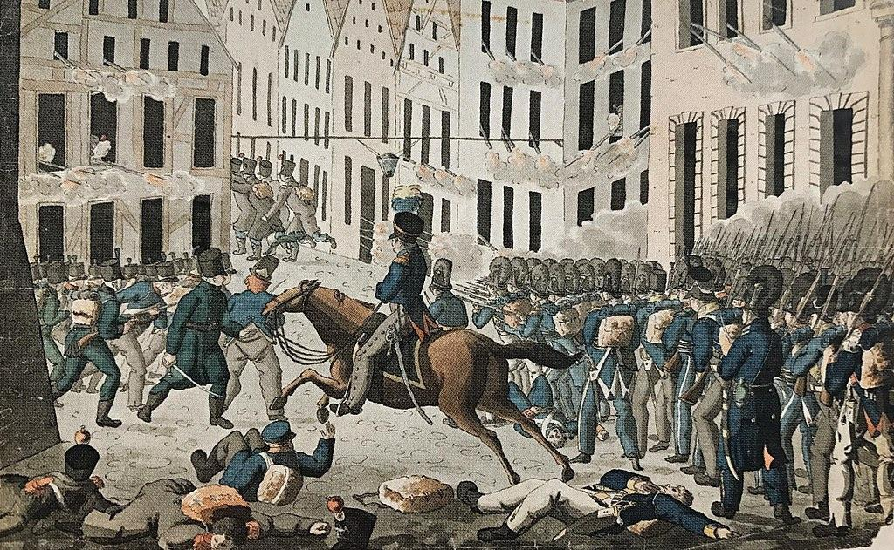
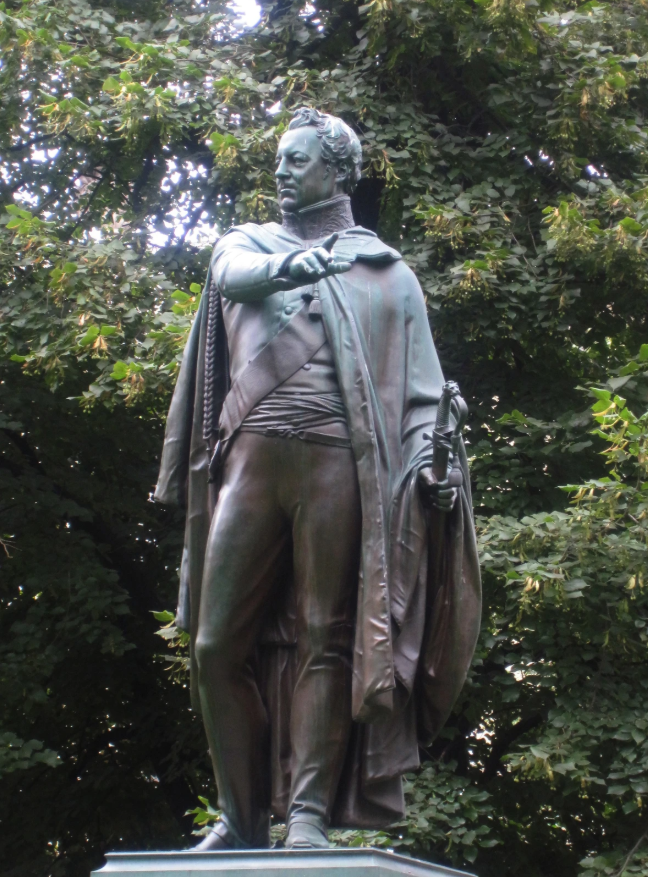
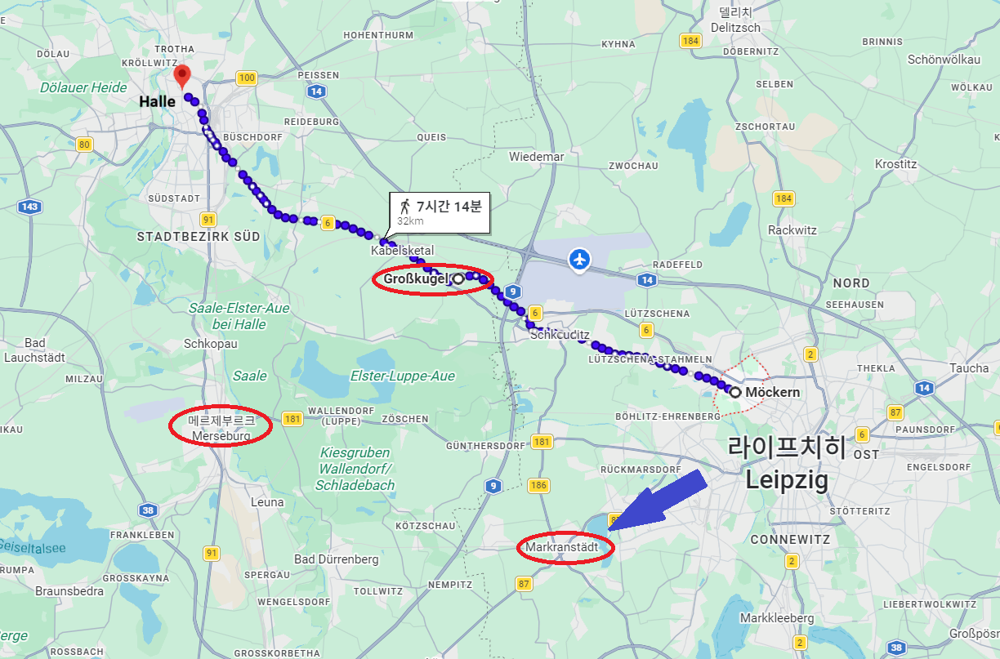
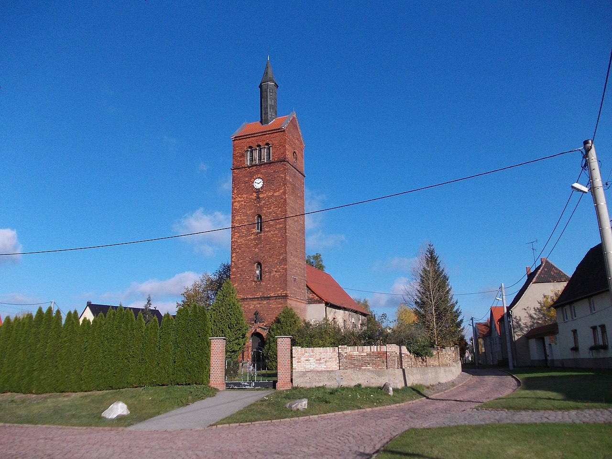

라이프치히 전투 (39) - 서로 말 안 섞는 사이
게시: 2026-03-16T06:30:30+09:00
10월 18일 저녁 7시경, 요크 장군은 블뤼허로부터 '나폴레옹이 서쪽으로 탈출한다는 정보가 있으니 당장 출발하여 할러(Halle)와 메르제부르크(Merseburg)에서 잘러(Saale) 강을 건너는 다리들을 확보하라는 명령을 받았습니다. 그와 함께, 블뤼허는 요크에게 '후퇴하는 적군에게 가능한 한 많은 피해를 끼치되, 현장에서의 상황 판단에 따라 자유롭게 작전해도 좋다'는 허락도 받았습니다. 블뤼허는 이 작전에 나서는 요크의 프로이센 군단에게 자켄(Sacken)의 러시아 군단 소속 코삭 기병들과 함께 그날 투항한 작센 기병여단을 붙여주어 보강해 주었습니다. 이것만 보면 요크는 꽤 꿀보직을 맡은 것처럼 보입니다. 당장 내일 벌어질 라이프치히 시가전의 혈전으로 부하들을 내몰지 않아도 되었고, 또 상관의 추상 같은 명령과 감시에서 벗어나 자유롭게 움직일 수 있는 권한을 받았으니까요. 그러나 요크의 기분은 그다지 좋지 못했습니다. 그의 프로이센 군단은 바로 이틀전 뫼케른에서 마르몽의 그랑다르메 제6군단과 혈전을 벌여 승리했으나 그 전투에서 엄청난 피해를 입었고, 그 덕분(?)에 18일의 전투에서는 후방에 빠져 휴식과 정비 시간을 가질 수 있었습니다. 요크 본인은 오이트릿쉬(Eutritzsch)의 언덕에서 18일 벌어지는 전투를 망원경으로 관찰하며 전달되는 전황을 얻어 들었는데, 그 내용은 자존심 강한 이 늙은 프로이센 장군 마음에 썩 불쾌한 것이었습니다. 주전선인 남쪽 프롭스트하이다 일대에서는 바클레이의 러시아군이 거의 전진을 하지 못하는 것이 명백했습니다. 그나마 북동쪽 쇤너펠트 전선에서는 연합군이 활발히 전진했지만, 들려오는 소식을 들어보니 베니히센과 베르나도트 사이에는 협동 작전이 거의 잘 이루어지지 않고 있었고, 특히 베르나도트는 피해가 극심할 것 같은 최전선에는 노골적으로 뷜로의 프로이센 군단을 앞세웠습니다. 이건 바로 이틀전 뫼케른 전투에서 큰 피해를 입어야 했던 자신의 신세와 비슷했습니다. 특히 빈정이 상했던 것은 스웨덴 왕세자 신분의 베르나도트가, 정작 스웨덴 사단은 혹여나 졸병 하나라도 다칠새라 후방에 모셔두고 애지중지한다는 사실이었습니다. 이에 대해서는 스웨덴 사단에서조차 '남들 보기 창피하다'라며 불만이 나올 정도였습니다.

(10월 19일 라이프치히 전투 마지막 날, 스웨덴군이 시가전을 벌이며 진격하는 모습입니다. 스웨덴군의 행렬에 건물 창문마다 그랑다르메 병사들이 숨어서 머스켓 사격을 퍼붓는 모습이 그려져 있습니다. 이렇게 보면 스웨덴군이 가장 위험한 임무에 투입된 것처럼 묘사되어 있으나, 이는 스웨덴군이 '정말 남보기 창피하다'면서 전투 투입을 강력히 요청한 결과, 베르나도트가 마지못해 사실상 전투가 끝난 뒤에 잔당 소탕을 위해 투입된 것에 불과했습니다. 덕분에 약 2만 정도였던 스웨덴군은 그 치열했다는 라이프치히 전투에 참전하고도 사상자가 200여 명에 불과했습니다.) 그런 와중에 1만4천 병력의 지친 프로이센 군단 하나를 달랑 보내어 10만인지 15만인지 알 수 없는 그랑다르메 전체의 후퇴를 저지하라니 좀 심한 거 아닌가 하는 생각을 요크 백작은 했던 것 같습니다. 요크는 블뤼허 및 그나이제나우와는 원래부터 사이가 매우 좋지 않은 관계였습니다. 요크는 원래 목사의 아들로서 대단한 귀족 집안이 아닌데다 젊은 시절 치기를 부린 전과도 있고 해서, 그가 46세가 되던 1805년까지도 그의 계급은 대령에 불과했습니다. 그렇게 오랜 기간 바닥 생활을 해서인지 그는 평소 병사들의 처우와 복지에 대해 무척이나 신경써주는 꽤 드문 장군이었습니다. 그래서, 열혈 애국자라는 공통점에도 불구하고 그는 프로이센 귀족의 전형이던 블뤼허와는 사이가 좋지 않았고, 특히 머리 좋고 젊은 나이에 출세한 '안전한 후방의 참모' 그나이제나우와는 더더욱 사이가 좋지 않았습니다. 그는 그런 블뤼허와 그나이제나우가 마치 쉬운 일감을 주는 듯 선심을 쓰며 '잘러강의 다리를 확보하라'는 명령을 내리는 것에 대해 반감을 가졌습니다.

(그나이제나우입니다. 그나이제나우도 요크처럼 하급 귀족 군인 집안 출신의 장교였으므로 어떻게 생각하면 요크와 사이가 좋아야 했는데 실제로는 매우 사이가 좋지 않았습니다. 계급도 더 낮고 나이도 훨씬 젊은 그나이제나우가 실질적으로는 자신의 상관 노릇을 하는 것에 대해 요크의 질투심이 불탔기 때문이라는 것이 객관적인 평가입니다.

(특히 이 그림에서 묘사된 카츠바흐(Katzbach) 전투에서 블뤼허의 슐레지엔 방면군이 막도날의 보버(Bober) 방면군과 싸워 승전한 뒤, 기쁨에 넘친 그나이제나우가 요크에게 축하 인사를 건넸을 때, 요크가 싸늘하게 '당신이 원하던 승리는 여기 있는데, 당신이 내게 약속한 식량은 어디 있소?'라고 물은 사건은 유명합니다. 그에 대해, 그나이제나우도 분노에 차 싸늘하게 '지금 장군님께는 이틀치의 빵이 있고 주변 밭에는 감자가 가득합니다. 그런데도 병사들이 굶고 있다면 그건 장군님 책임이지요.'라고 내뱉고는 휙 지나가버렸다고 합니다. 이후 이 둘은 서로 말을 섞지 않았습니다.)
(참고로 독일 작센 지방에서 감자는 원래 9월 말부터 10월 중순 사이에 추수하는 것이 정상이지만, 먹을 것이 부족하던 19세기 초에는 카츠바흐 전투가 벌어졌던 8월 말에 약간 덜 익은 감자를 캐먹는 일은 흔했다고 합니다.) 군단장 요크의 그런 기분이 전염이 되었는지, 영문도 모른 채 해진 뒤 남서쪽으로 밤샘 행군을 하게 된 프로이센 병사들의 사기는 바닥을 쳤습니다. 이들은 이렇게 '이번 전투에 이겼다'라고 설명을 들은 뒤 이상하게도 후퇴를 해야 했던 경험이 꽤 많았습니다. 뤼첸 전투나 바우첸 전투에서 연합군은 모두 승리를 선언했지만 결과적으로는 후퇴를 해야 했던 것입니다. 한밤중 고된 밤샘 행군을 하며 프로이센 병사들은 이번에도 그런 것 아닌가 생각하며 불안해 해야 했습니다. 할러와 메르제부르크는 애초에 블뤼허가 라이프치히로 오기 전에 출발했던 도시였고, 32km 이상 떨어진 매우 먼 곳이었습니다. 밤새워 행군한 요크의 군단은 19일 새벽에야 라이프치히-할러 사이의 딱 중간 지점인 그로스쿠겔(Großkugel)에 도착합니다. 이제 여기서 병력 절반을 갈라 반은 메르제부르크로 보내야 했는데, 요크는 그 명령을 무시하고 그냥 1만4천 병력 전체를 데리고 할러로 가기로 합니다. 요크 생각에 15만에 가까운 적을 두 군데 모두에서 막는답시고 병력을 7천씩 둘로 나누어 보내는 것은 무리였고, 차라리 할러에 집중을 하는 것이 나았습니다. 블뤼허가 부여한 자유재량권에 그 정도는 허용된다고 보았던 것입니다.

(요크의 행군 경로입니다. 지도 아래에 남서쪽으로 향한 큰 화살표가 실제 나폴레옹의 퇴각 방향입니다.)

(그로스쿠겔(Großkugel)은 독일어로 큰 공이라는 뜻의 지명이지만, 실은 kugel이라는 단어는 원래 그 지방에 거주하던 슬라브계 소르비(Sorbi)인들의 언어로 Kogyl 또는 Kugola에서 온 것으로 추정되며, 그 뜻은 둥근 언덕 지형이라는 뜻입니다. 이 마을은 원래 프로이센 땅이었으나 1807년 틸지트 회담 이후로 베스트팔렌 왕국으로 넘어갔다가, 다시 1815년 프로이센 땅이 됩니다. 이 마을은 지금도 인구 2천이 살짝 넘는 작은 마을로서, 사진 속 건물은 그로스쿠겔의 장크트 마르티니(St. Martini) 교회입니다.) 밤샘 행군은 무척 힘든 것입니다. 요크는 그로스쿠겔에서 몇 시간 병사들을 휴식시켰는데, 그 사이에 라이프치히에서 반가운 소식을 들고 파발마가 찾아왔습니다. 라이프치히에서 연합군이 대승을 거두었다는 소식이었습니다. 요크는 사기 진작을 위해 이 사실을 병사들에게 공표했고, 당연히 모두들 크게 기뻐하며 환호했습니다. 그러나 그 서신 속에는 정작 나폴레옹이 어느 방향으로 후퇴하는지에 대해서는 아무런 정보가 없었습니다. 요크는 오전 10시에 다시 할러를 향해 행군을 시작했고, 오후가 되자 블뤼허가 보낸 서신이 요크에게 또 도착했습니다. 라이프치히를 점령했다는 소식과 함께, 랑쥬롱과 자켄의 러시아 군단들도 휴식을 마치는 대로 남서쪽 뤼첸 방향으로 행군할 것이라는 통보였습니다. 여전히 나폴레옹의 후퇴 방향이나, 요크에게 별도의 작전 명령 지시는 없었습니다. 랑쥬롱과 자켄이 자신의 뒤를 따라 북서쪽으로 오는 것이 아니라 남서쪽인 뤼첸 방향으로 간다고 했으니, 나폴레옹의 후퇴로가 뤼첸 방향이라고 요크도 합리적으로 추정할 수도 있었을 것 같은데, 아무튼 요크는 그냥 할러 방향으로 행군을 계속 했습니다. 요크는 나중에 '서쪽 린더나우 앞쪽을 지키고 있던 귤라이의 오스트리아 제3군단이 후퇴하는 나폴레옹의 앞을 막을 것'으로 기대했다고 했고, 또 자신에게 주어진 명령은 할러와 메르제부르크의 다리를 점령하라는 것이었고 그 명령에 변경이 없었으므로 맡은 바 임무를 다했다고 주장했습니다. 실제로 아무도 요크에게 나폴레옹의 퇴각 방향이나 다른 부대들의 움직임에 대해 일언반구 소식을 보내주지 않았습니다. 결국 후퇴하는 나폴레옹의 발목을 제대로 잡을 수도 있었던 요크의 군단은 전혀 엉뚱한 방향인 북서쪽 할러에 19일 저녁에야 도착했고, 거기에서야 요크는 남쪽 메르제부르크 일대로 기병대를 보내 그랑다르메의 움직임이 있는지 정찰하도록 했습니다. 밤 사이에 라이프치히에서는 몇 번 더 전령이 도착하여 라이프치히에서의 승리 및 그랑다르메의 붕괴 소식을 전해왔고, 온 도시가 축하 분위기에 빠져들었습니다. 그러나 그 어느 전령도 나폴레옹이 그래서 어느 방향으로 후퇴했는지에 대해서는 아무런 정보를 가지고 있지 않았습니다. 이는 사실 블뤼허와 그나이제나우의 실책이었고, 요크는 어쩌면 평소 얄미워하던 이들의 실책에 은근히 기뻐했을지도 모릅니다. Source : The Life of Napoleon Bonaparte, by William Milligan Sloane Napoleon and the Struggle for Germany, by Leggiere, Michael V With Napoleon's Guns by Colonel Jean-Nicolas-Auguste Noël https://www.britannica.com/event/Napoleonic-Wars/Dispositions-for-the-autumn-campaign http://www.historyofwar.org/articles/campaign_leipzig.html https://warhistory.org/@msw/article/leipzig-battle-of-the-nations https://www.encyclopedia.com/history/encyclopedias-almanacs-transcripts-and-maps/leipzig-battle-0 https://warfarehistorynetwork.com/article/death-knell-for-napoleons-empire/ https://www.napoleon-series.org/military-info/battles/leipzig/c_leipzigoob10.html https://www.napoleonmagazine.com/post/gneisenau-symbol-of-prussian-resistance https://commons.wikimedia.org/wiki/File:Assault_of_Leipzig.jpg https://en.wikipedia.org/wiki/Battle_of_the_Katzbach
{kind=link}